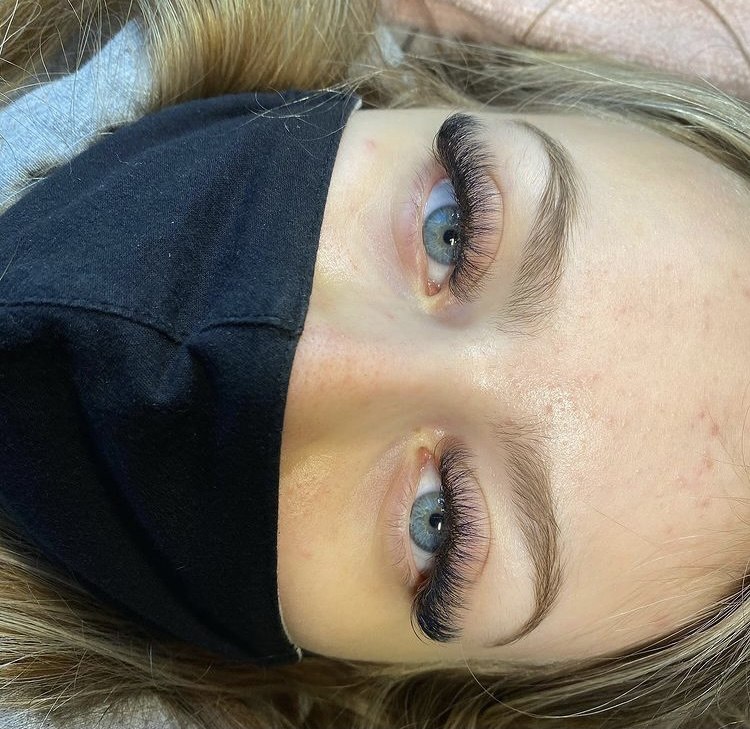
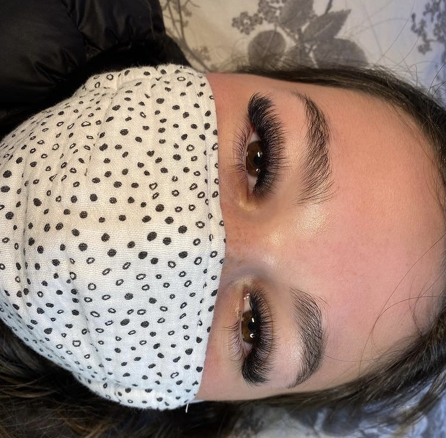

Full set/$70.00. Fill/ $40.00. Classic eyelash extensions are simple, beautiful, natural-looking eyelash extensions. They are applied on a 1:1 ratio, which means one extension is attached to one natural lash. This allows you to achieve a natural enhancement. Classic eyelash extension application typically takes 1.5 to 2 hours and the results should be soft, natural-looking lashes. Classic lashes won’t add much volume but will add length. Classic extensions offer an even lash line that opens up the eye.
Full set/ $85.00. Fill/ $50.00. Hybrid lashes are a 70-30 mixture of both classic lashes and volume lashes. Choosing hybrid extensions gives you the best of both worlds. The look is achieved by mixing classic lashes and volume lashes placed strategically to frame the eyes. Hybrid extensions offer a variety of texture and more volume, but without the sometimes-unnatural look of volume lashes. For clients that want a lash line with a bit more volume but not quite as full as volume extensions, then this is the route to go.
Full set/ $100.00. Fill/ $60.00. Volume eyelash extensions vary from a natural look which adds some length and volume, to a very dramatic and full look. The lashes range from 2D-6D and anything over a 4D is going to appear that your client is wearing a strip versus a natural look that classic and hybrid extensions would give. This technique can be done with pre-made fans or the fans can be made by hand using a special tweezer. The fans are still attached to natural lashes but they come in .03, .05, .07 which are lighter than classic extensions. It typically takes 2-3 hours